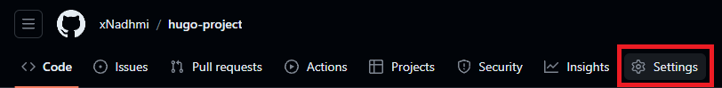
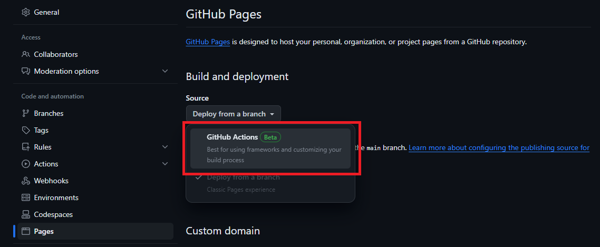

Introduction to Hugo and GitHub Pages
Table of Contents
Lesson: Getting Started with Hugo and GitHub Pages
Introduction
In today’s lesson, we’ll explore the powerful static site generator, Hugo, and learn how to leverage GitHub Pages to host our Hugo-generated site. Whether you’re a beginner or looking to advance your skills, this lesson will cover the essentials to get you started and take you to the next level.
What is Hugo?
Hugo is a fast and flexible static site generator written in Go. It allows you to create websites with ease, providing a simple and efficient way to manage content. Unlike dynamic content management systems, Hugo generates static HTML files, making your site fast, secure, and easy to deploy.
Setting Up Hugo
Installation
- Download Hugo from the official website.
- Follow the installation instructions for your operating system.
Create a New Hugo Project
hugo new site myblog
cd myblog
Choose a Theme
Hugo supports various themes. Choose one and add it to your configuration:
git init
git submodule add https://github.com/budparr/gohugo-theme-ananke.git themes/ananke
echo 'theme = "ananke"' >> hugo.toml
Create Your First Content
hugo new posts/my-first-post.md
Edit the newly created Markdown file to add content.
Advanced Hugo Usage
Customizing Themes
- Explore the theme’s documentation.
- Modify the theme’s files in your project’s
themesdirectory to customize the layout and style.
Shortcodes and Widgets
Enhance your content with shortcodes and interactive widgets.
Taxonomies
Organize content with taxonomies, such as tags and categories.
Hosting with GitHub Pages
Set Up GitHub Repository
- Create a new repository on GitHub.
- Push your Hugo project to the repository.
Configure GitHub Actions
To configure the site to be published using GitHub Actions :
- In GitHub, access your site’s repository.
- Under the name of your repository, click on Settings. If you don’t see the « Settings » tab, select the drop-down menu, then click Settings.

- In the « Code and automation » section of the sidebar, click on Pages.
- Under « Build and deployment », under « Source », select GitHub Actions.

- GitHub offers several startup workflows. You can simply click on browse all workflows, then search for Hugo and configure it.

GitHub Pages does not associate a specific workflow with GitHub Pages parameters. However, GitHub Pages settings are linked to the workflow that most recently deployed your site.
An example of what the .github/workflows/hugo.yml file would look like:
name: Build and Deploy
on:
push:
branches:
- main
jobs:
deploy:
runs-on: ubuntu-latest
steps:
- name: Checkout Repository
uses: actions/checkout@v2
- name: Setup Hugo
uses: peaceiris/actions-hugo@v2
- name: Build
run: hugo --minify
- name: Deploy to GitHub Pages
uses: peaceiris/actions-gh-pages@v3
with:
publish_dir: ./public
github_token: ${{ secrets.GITHUB_TOKEN }}
Your Hugo website is now online on GitHub Pages! From now on, any changes you make to the main branch will automatically update your website’s interface.